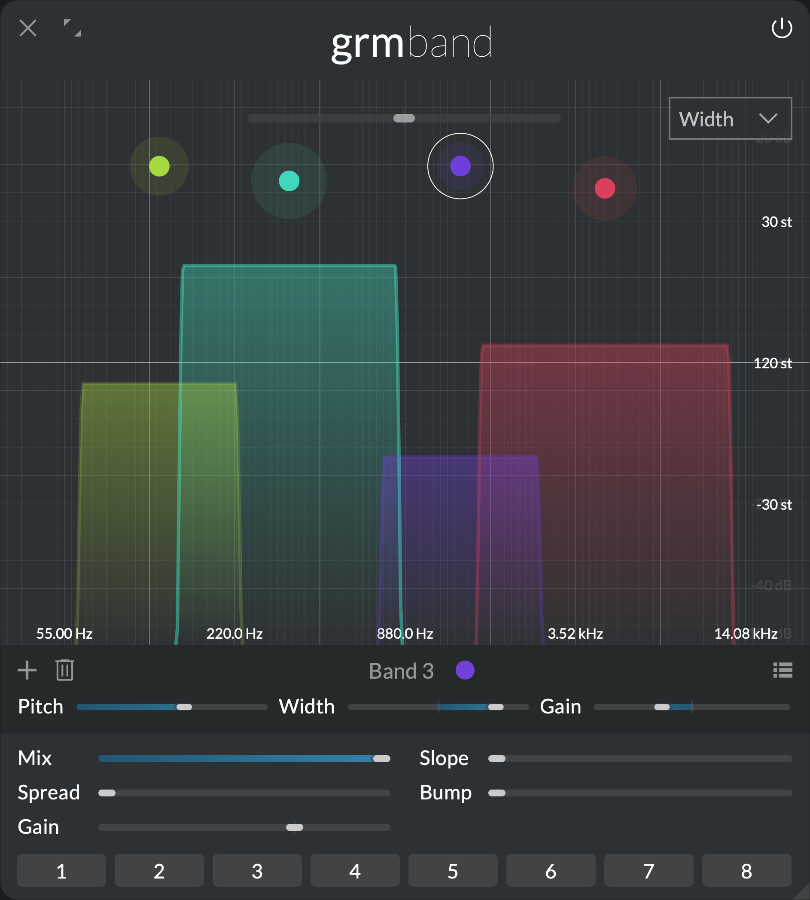
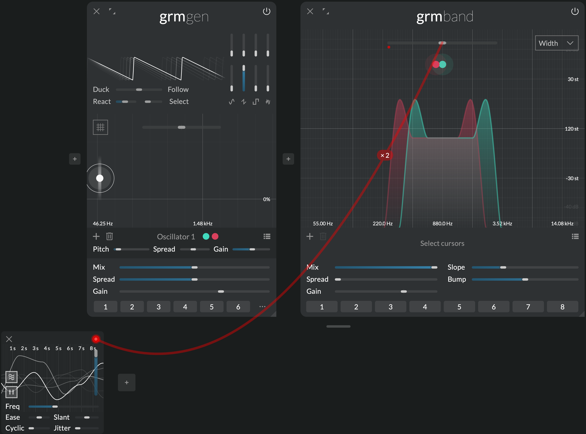
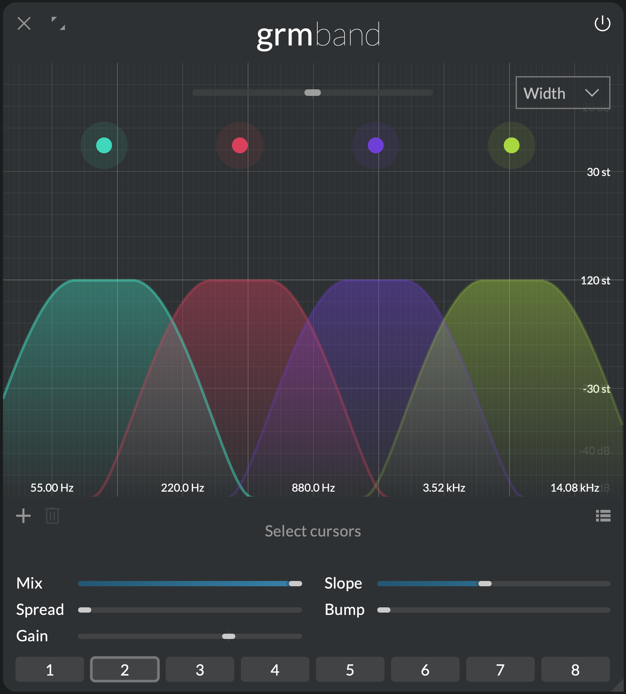
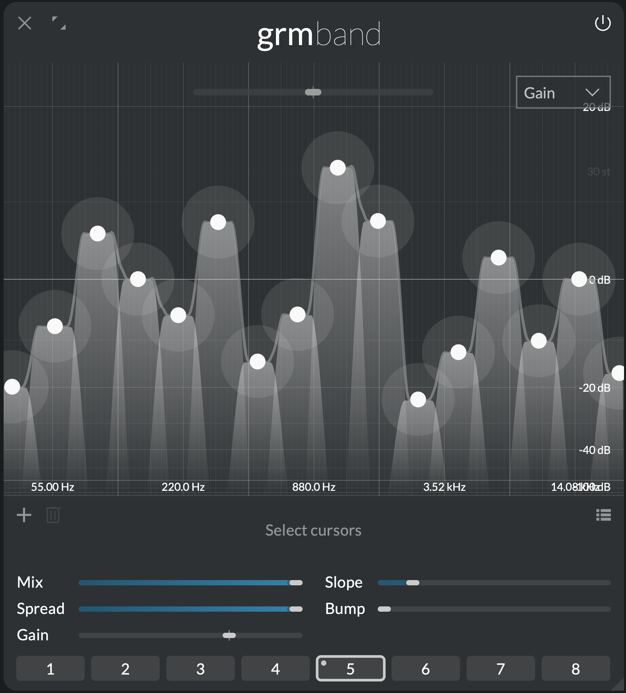

Spectral chisel
Band

From subtle timbre corrections to drastic shape alterations, Band carves into frequencies like in clay. Feed it audio and start isolating spectral regions, put forth or gently reduce tonal elements, or totally change the frequency profile of your material. Unlike a traditional EQ, more creative than technical, Band is a spectral sculptor's tool of choice.
Features
- Precise filter bank with up to 16 independent & spatializable bands
- Continuous slope setting for razor-sharp selectivity or gentle pushes
- Adjustable formant-shaping bumps at transition frequencies
- Band-pass or band-reject modes per band
Context
Filtering can be a transformative tool, letting you freely shape the spectral content of your sounds. Band is a bank of independently-controlled filters, cutting, reducing or amplifying parts of its input's spectrum. Each band lets you either remove the low and high frequencies, keeping only a precise band of interest (band-pass), or notch out a band, keeping everything surrounding it intact (band-reject). Each band has an independent gain; band shapes are then combined additively, resulting in any desired frequency response. And like all other modules, bands are assigned to one or several channels, for multichannel filtering.
Note
Under the hood, Band uses linear-phase FFT processing; this is what makes its versatility and precision, but also implies:
- a natural latency of around 2000 samples, i.e. 20 ms at 96kHz, 40 ms at 48kHz, etc. As usual, the higher the sample rate, the smaller the latency.
- some pre-ringing when the slope is extremely steep. If that's a problem, increasing Slope to a few semitones drastically reduces ringing.
Controls
Cursor Area
Click to add a band; double-click a band to remove it. Each band is visualized by a color gradient of its assigned channels colors (see Spread). Each channel's frequency response is visualized by a thick, solid line.
- Y axis parameter: The combo box determines which parameter is displayed on the Y axis (and consequently which is displayed on the Z axis, ie. cursors' halo size): either Gain or Width.
Each band has three parameters:
- Pitch (X axis): Center frequency of the band
- Width (Y or Z axis): Width of the band, in semitones. Positive width means band-pass, negative width means band-reject.
-
Gain (Z or Y axis): Gain of the band
-
Transposition: Transposes all bands center frequencies. This parameter has as many independently-modulatable instances as there are bands (see Modulation).
Global controls
- Mix: Crossfades between the dry (0%) and the wet signal (100%).
The following parameters have as many independently-modulatable instances as there are bands (see Modulation).
- Spread: Channel-locality of each band. At 0%, each band processes only the channels it is assigned to (see the global Spread section); at 100%, all bands process all channels in parallel (multi-mono).
- Gain: Global gain of all bands.
- Slope: Number of semitones to transition from cutting to passing, and conversely.
- Bump: Adds a bell-shaped boost at the transition frequencies. The bump's width is determined by Slope, and its height is in ratio of the gain.
Tips and tricks
Low pass, high pass
When the Pitch of a band is at its minimum value, Width can do low and high-pass. Positive Width values result in a low-pass filter with increasingly low cutoff; negative Width values result in a high-pass filter with increasingly high cutoff.
Animated formants

Feed Band with a ~50Hz sawtooth wave e.g. from Gen. Add a few bands in the middle, with Width around 15st, Slope around 6st, and Bump around 1x. Make an agitation, and agitate Transposition: The two bands agitate independently, producing evolving guttural drones. A cheap thrill.
Band splits

Band can split a signal into disjoint bands, for further independent processing. Add as many bands as there are channels, and adjust Slope to taste. Place them so that they sum to zero: For this, temporarily set Spread to 100%, make the frequency response (solid white line) as flat as possible, then set Spread back to 0%. You can follow Band with e.g. a Pitch instance, to pitch-shift and/or delay each band by a different amount.
Factory snapshots 2 or 3 illustrate this technique.
Graphic equalizer

Make a few bands covering the whole spectrum and summing to zero (see previous tip), with Spread at 0%. A slightly increased Slope will smoothen the bands and reduce ringing. Now display Gain on the Y axis (Y axis parameter), and adjust the gain of each band as desired. Use the Option key to lock the X axis when dragging a band. You now have a graphic equalizer.
Factory snapshots 4 and 5 illustrate this technique.